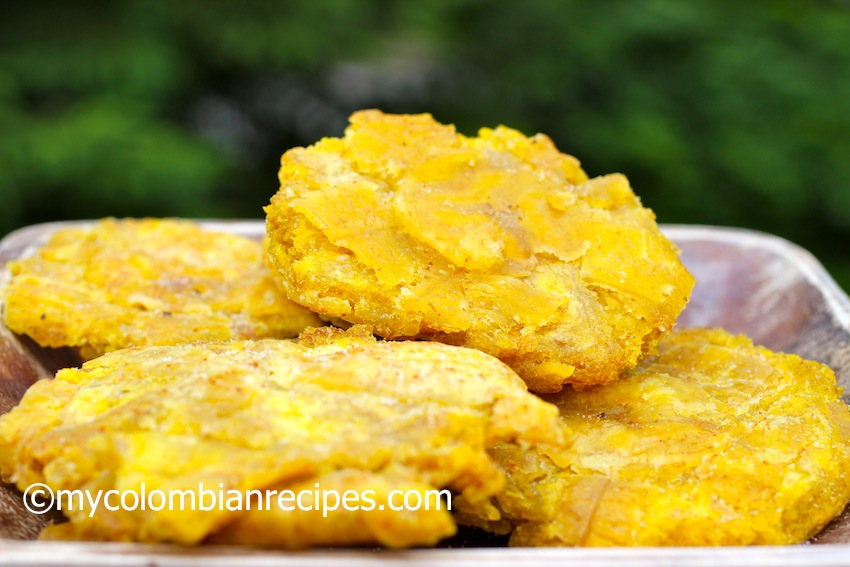

Patacón

What's a patacón?
Patacón also known as tostón is a popular dish in
Latin America made with green plantains.
Serve as a side dish or appetizer with your
favorite topping sauce.
Ingredients
- Plantain
- Water
- Salt (optional)
- Filling
- Cheese
- Chicken
- Shredded Beef
How to cook patacones?
- Set water to boil and add the plantains
- Once done, add salt, rinse, and smash into circular shapes
- Cook on a pan for about 5 minutes on each side